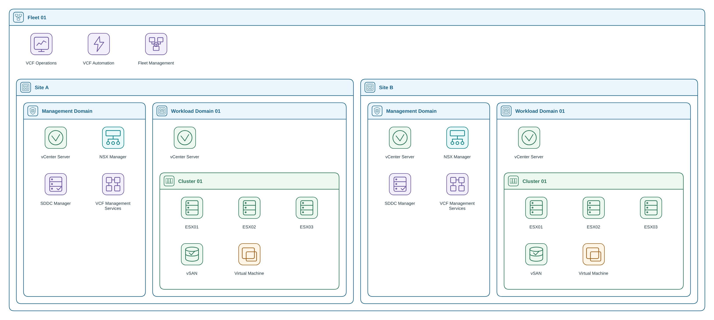
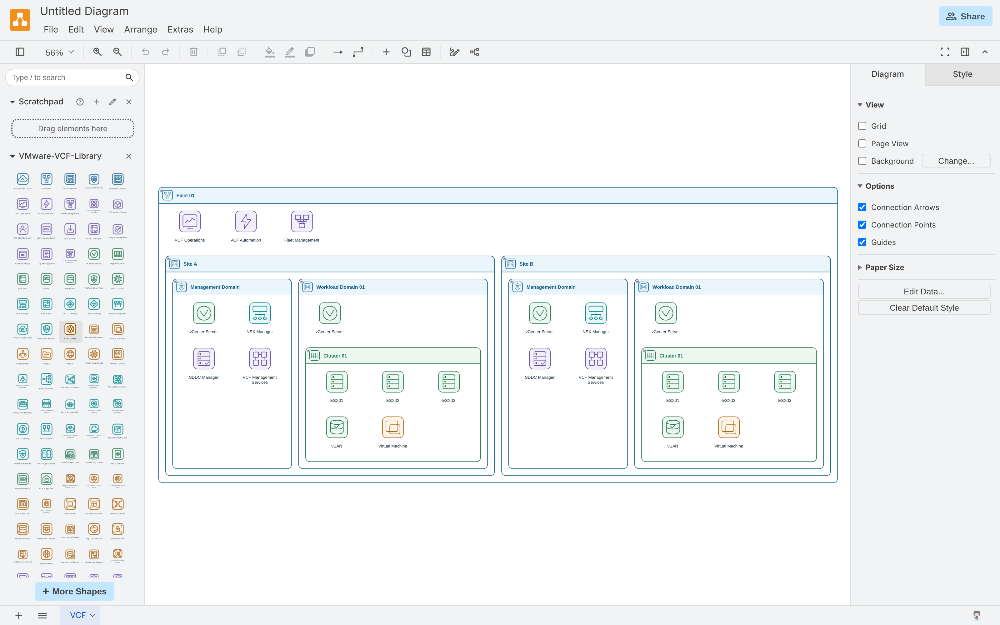
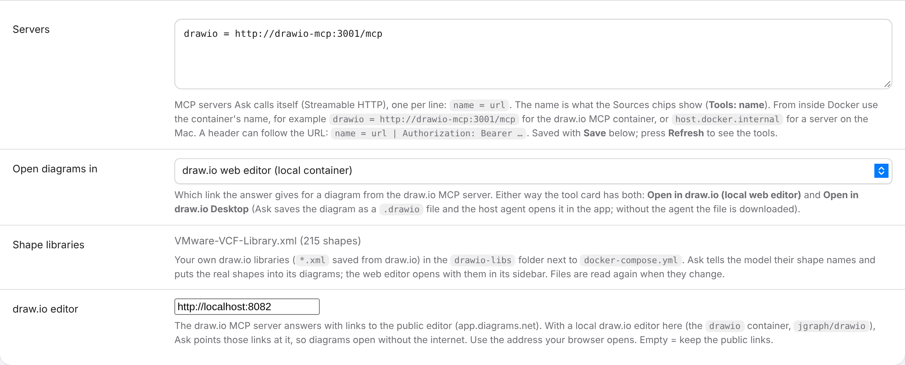
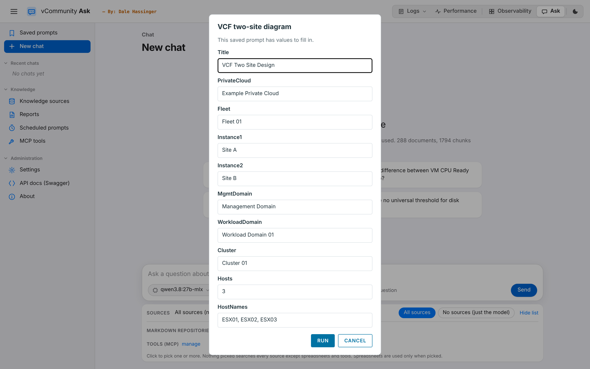
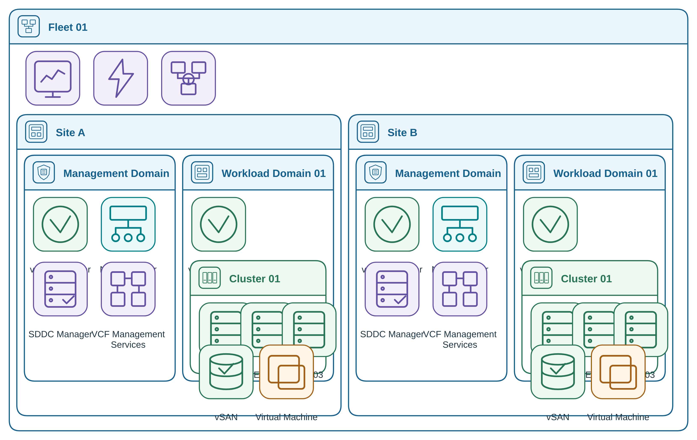

vCommunity Ask | VCF Designs with draw.io

Draw VCF Designs by Hand or Let vCommunity Ask Draw Them, All Offline 🗺️
I often draw VCF designs. Fleets, instances, management domains, workload domains, clusters. Every customer conversation seems to end with "can you send me a diagram of that?" I wanted the same icons every time, and I wanted a faster way to get from a few names to a finished drawing.
So I added draw.io to vCommunity Ask. With the new shape libraries you can create VCF designs manually in draw.io, or you can use vCommunity Ask with the drawio source and the process can be automated. Everything runs in containers on my Mac. Nothing goes to the internet.
What's New:
- draw.io MCP server container. Ask calls the draw.io MCP server (
jgraph/drawio-mcp) to create the diagram. - draw.io editor container. A local copy of the draw.io web editor (
jgraph/drawio) athttp://localhost:8082. Diagrams open here instead of the public site. - draw.io Desktop option. If you prefer the Mac app, Ask can open the diagram in draw.io Desktop instead.
- Your own shape libraries. Drop draw.io library files in the
drawio-libsfolder. Ask tells the model the shape names and swaps in the real shapes. - Automatic tidy layout. Ask lays out the shapes on a clean grid and sizes every container to fit.
- Saved prompts with variables. Fill in the names in a pop-up and the diagram is drawn with them.
Two Ways to Use the Shape Libraries:
Manually:
Open the draw.io editor and the VCF library is right there in the left sidebar. Drag in a fleet container, a couple of instances, a management domain, and start building. This is how I have always done it, just with a better set of icons.
Automated:
Pick drawio as a source in vCommunity Ask, describe the design in plain words, and Ask draws it. The model picks the shapes from the library by name, Ask swaps in the real shapes, tidies the layout, and gives you a link that opens the result in the local editor.
Both ways use the same library, so a diagram Ask draws looks exactly like one I drew by hand. I can open the Ask version and keep editing it.
The draw.io Editor with the VCF Library (Screen Shot):

The library I use has 215 shapes: product icons (vCenter Server, NSX Manager, SDDC Manager, VCF Operations, VCF Automation, ESX hosts, vSAN), containers with headers (VCF Fleet, VCF Instance, Management Domain, Workload Domain, vSphere Cluster), and a few starter layouts.
Setup:
Two draw.io containers run next to the other vCommunity containers in docker-compose.yml:
drawio-mcp:
image: ${DRAWIO_MCP_IMAGE:-jgraph/drawio-mcp:latest}
container_name: drawio-mcp
ports:
- "127.0.0.1:${DRAWIO_MCP_PORT:-3001}:3001"
drawio:
image: ${DRAWIO_IMAGE:-jgraph/drawio:latest}
container_name: drawio
ports:
- "127.0.0.1:${DRAWIO_PORT:-8082}:8080"
volumes:
- ./drawio-libs:/usr/local/tomcat/webapps/draw/drawio-libs:ro- Both ports are bound to
127.0.0.1, so only the Mac itself can reach them. - The
drawio-libsfolder is shared with Ask and with the editor. Put your library.xmlfiles there. - For dark sites, the offline bundle script saves both draw.io images with the rest.
Start everything:
docker compose up -d --build
docker compose psResults:


The draw.io Settings in Ask (Screen Shot):
The MCP tools page in Ask has the draw.io settings. Open diagrams in picks the local web editor or draw.io Desktop. Shape libraries shows which libraries Ask found.

Writing the Prompt:
No XML and no code. I describe the design from the outside in, the same way I would explain it on a whiteboard:
Using my shape library and the draw.io tool, draw a VMware Cloud Foundation diagram.
The outside box is a VCF Fleet container named Fleet 01.
The top row inside the fleet shows VCF Operations, VCF Automation and Fleet Management.
Under them are two VCF Instance containers side by side, named Site A and Site B.
Each instance holds a Management Domain container and a Workload Domain container side by side.
The Management Domain holds vCenter Server, NSX Manager, SDDC Manager and VCF Management Services.
The Workload Domain holds a vCenter Server and a vSphere Cluster container named Cluster 01.
The cluster holds 3 ESX hosts named ESX01, ESX02 and ESX03, then vSAN and a Virtual Machine.
Call create_diagram once and give me the link it returns.- Name things in the prompt. Ask keeps the names the model gives, so the hosts come out as ESX01, ESX02 and ESX03 instead of "ESX Host".
- Don't give sizes or positions. Say what sits side by side and what sits under what. Ask handles the spacing.
Saved Prompts with Variables:
This is my favorite part. A saved prompt in Ask can hold variables in curly braces, with a default after the =:
The outside box is a VCF Fleet container named {Fleet=Fleet 01}.
Under them are two VCF Instance containers side by side, named {Instance1=Site A} and {Instance2=Site B}.
The cluster container holds {Hosts=3} ESX Host icons named {HostNames=ESX01, ESX02, ESX03}.When I run the saved prompt, Ask asks for each value in a pop-up. It works like a questionnaire. Type the customer's fleet name, site names and host count, click Run, and the diagram is drawn with those names. Ask remembers the last values I used for each prompt.
Saved Prompt Variables (Screen Shot):

- A saved prompt can hold up to 30 variables.
- Variable names are letters, digits and
_. No spaces. {Name}with no default is required.{Name=default}fills in the default.
Why the Tidy Layout:
The first diagrams the model drew had the right shapes in the right containers, but the layout was rough. Icons got resized, rows were crammed together, and names ran into the next row.
Before (Screen Shot):

Rather than keep asking the model to do better, Ask now lays out the shapes itself after the swap. Icons go back to 64 x 64, each icon gets enough room for its name, rows are evenly spaced, and every container grows to fit what it holds. The model's grouping and order are kept.
After (Screen Shot):
Same prompt, same shapes. That is the diagram Ask hands back now.
Editing the Result:
The diagram is a normal draw.io file, so I finish it by hand when I need to:
- Rename a shape. Select it and press F2 or Enter (or double-click it), type the new name, then click an empty spot.
- Edit the label another way. Edit → Edit Data (Cmd+M) and change the label.
- Add more shapes. Drag them from the VCF library in the left sidebar.
- Save it. Every diagram is also saved as a
.drawiofile, with a Download button under the answer.
Gotchas:
- Tick drawio in Sources. Without it the model can't draw. With web search ticked it may point you at the public draw.io site instead.
- No link in the answer? The model stopped before calling
create_diagram. Ask again with Call create_diagram now. - The library doesn't show in the editor sidebar? The library files must be readable (
chmod 644 drawio-libs/*.xml), or the editor can't load them. - draw.io Desktop needs the Ask host agent on the Mac to open the file. Without it the file downloads, and draw.io Desktop opens that too.
- The model still matters. Small local models sometimes skip shapes or stop early. The words-only prompt and the tidy layout help a lot, but check the result.
Wrap Up:
I can now go from a few names to a VCF design in about a minute, and it uses the same icons I use when I draw by hand. Use the shape libraries manually in draw.io, or let vCommunity Ask with the drawio source automate it. Either way it stays local, so it works in a dark site too.
I always appreciate feedback. Let me know what you like, and what you would add next. See you in the vCommunity!